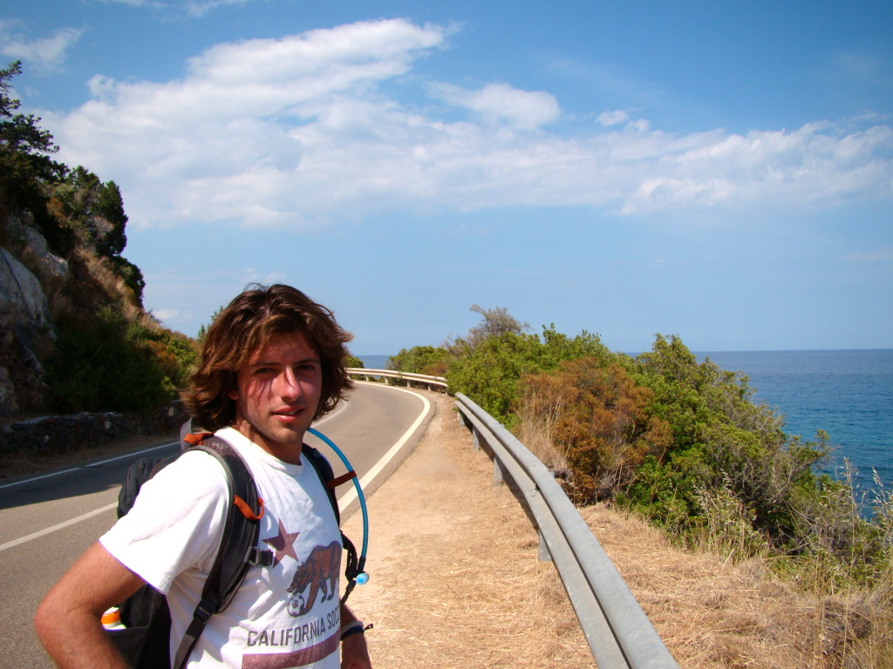

About Me
My name is Alexander Ricci and I live in Berkeley, CA. I graduated from Tulane University in 2013 with Bachelors of Science in Geology. After graduating, I movied back to Berkeley where I got a position in a labroatory as an Asbestos Analyst. After working there for a few months, I accepted a position as a Geologist at a consulting firm working in remediation. Since January of 2017, I have been persuing a Masters of Finance degree through Pennslvania State University with an expected graduation date of June 2018. I left my position as a Geologist in March of 2017 to focus on persuing my masters degree. In mid-February of this year (2018) I began a coding program with an expected completion date of July of 2018. I hope to combine the knowledge gained in the coding class to expand and elevate my studies in finance.